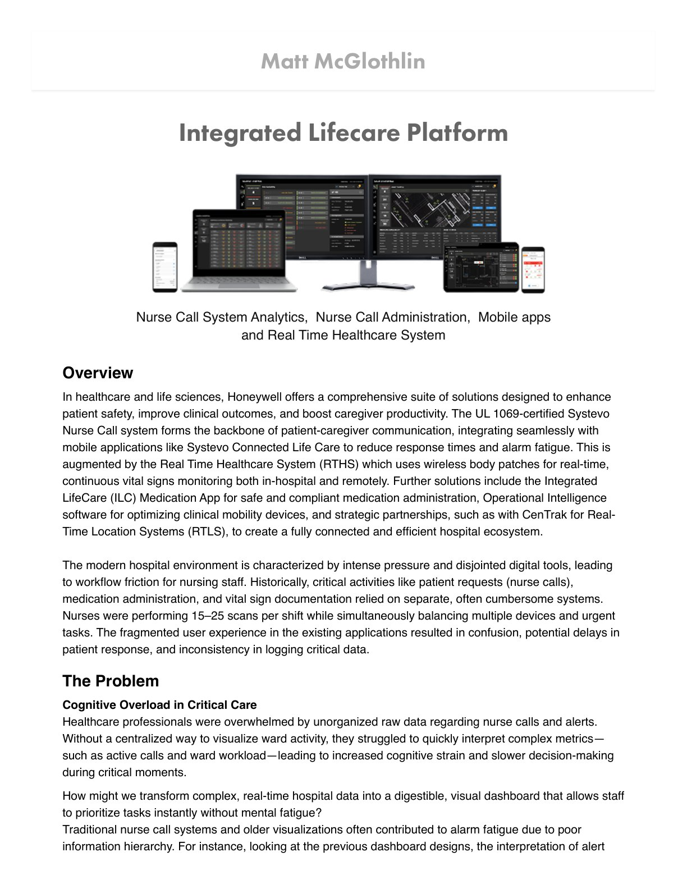
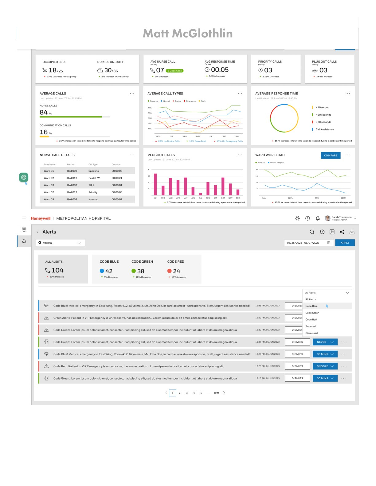
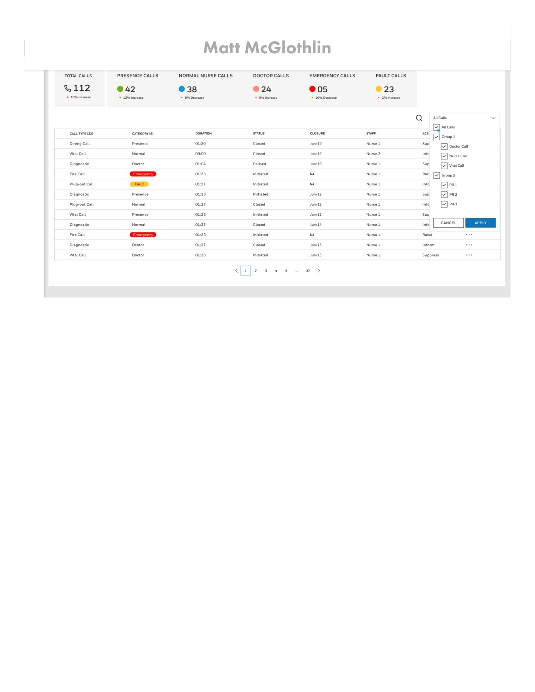
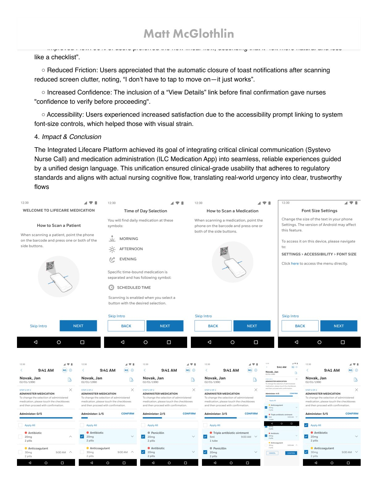
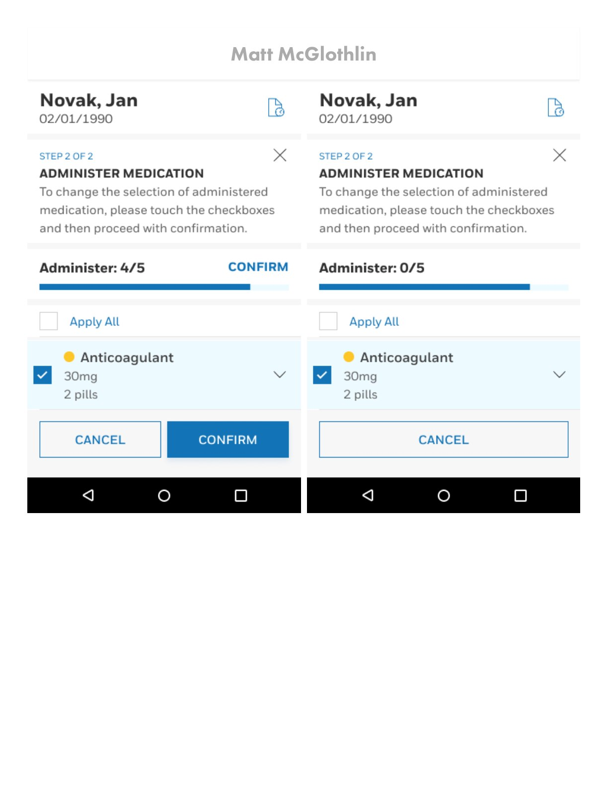
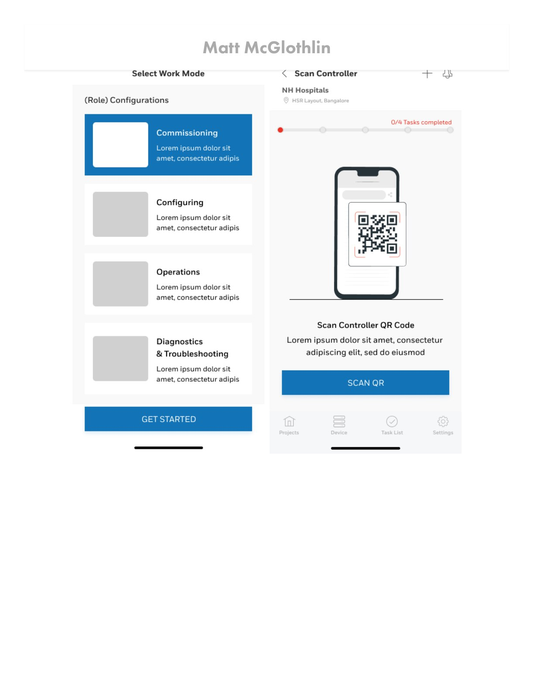
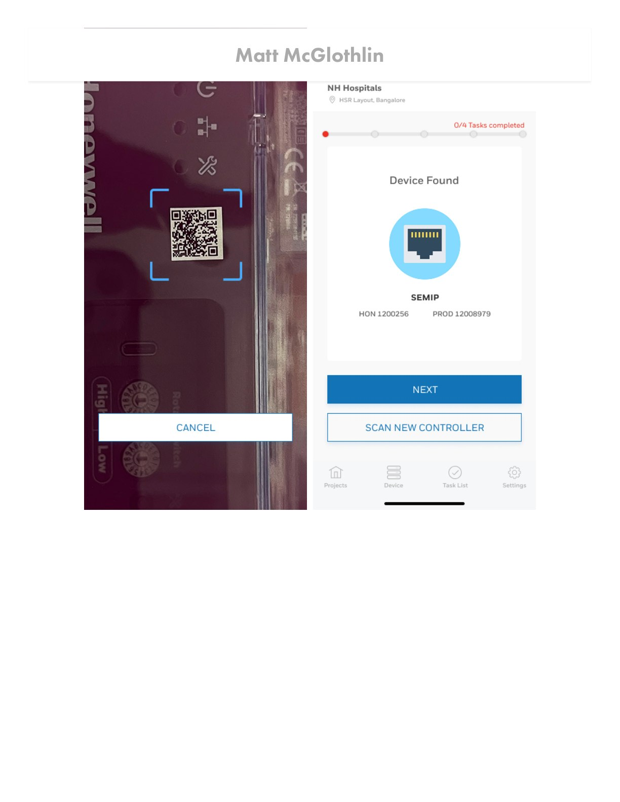
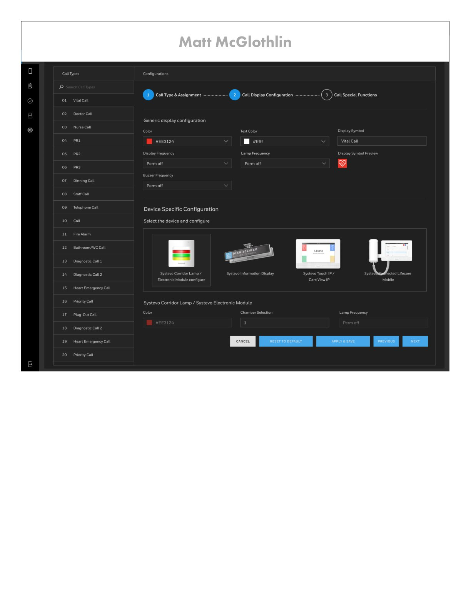
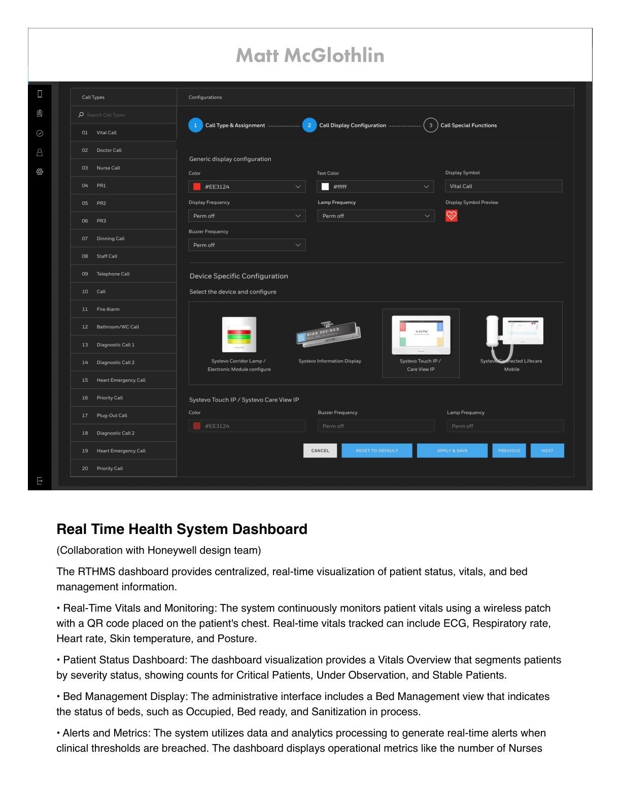
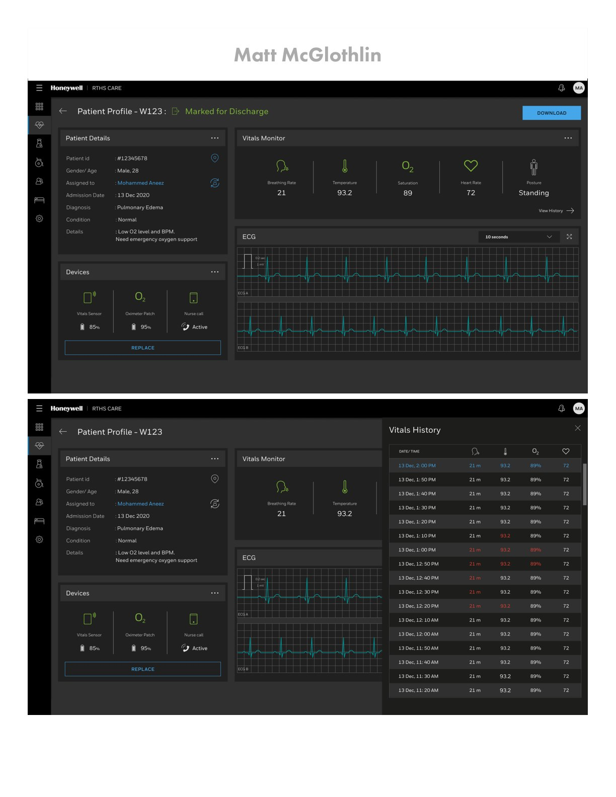

Healthcare · Mobile-First · Clinical Workflows
Integrated Lifecare Platform
Unifying fragmented clinical workflows and communication channels into a single, intuitive mobile-first platform.
The Goal
The primary goal of the Integrated Lifecare (ILC) Platform initiative was to unify fragmented clinical workflows and communication channels into a single, intuitive mobile-first platform — increasing caregiver efficiency, reducing cognitive load, decreasing administrative task time, and ultimately improving patient safety.
The Approach
Research with caregivers surfaced the moments where fragmented tools created the most friction. The design consolidated rounds, scanning, and communication into task-focused mobile flows built for one-handed use at the point of care.
The Outcome
Average scan-to-confirm time improved by 28% in validation testing, contributing to faster rounds completion and a measurable reduction in administrative overhead for caregivers.









